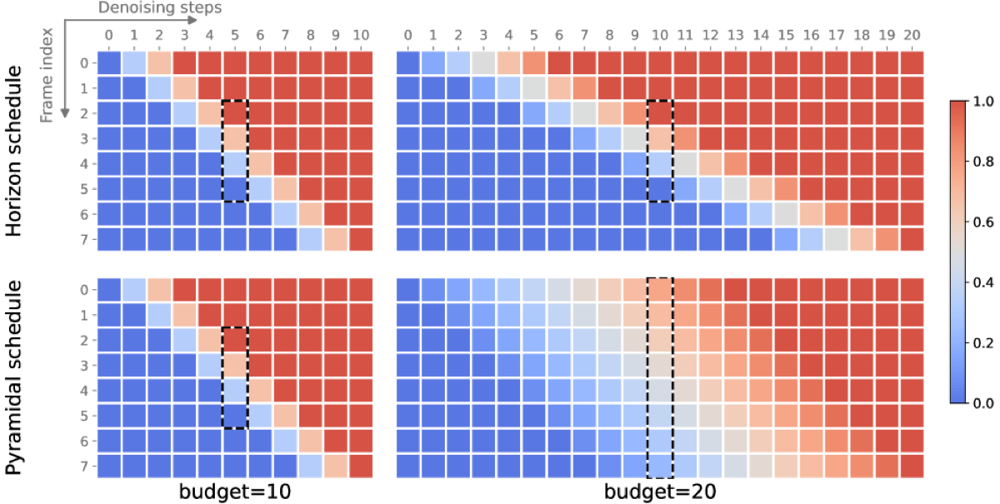

Why it matters왜 중요한가
The bottleneck of diffusion world models isn't fidelity — it's the sequential, step-by-step cost of imagining the future.
디퓨전 월드모델의 병목은 화질이 아니라, 미래를 상상하는 순차적·단계별 비용이다.
Model-based RL trains a controller inside an imagined world to save real samples. Diffusion world models make that imagined world vivid, but generating each frame needs a costly multi-step denoising pass, and standard imagination is sequential: generate a frame, pick an action, generate the next frame, repeat. That sequential dependency is the real wall to deployable, lightweight controllers. HI reframes imagination itself: denoise a whole window of future frames at once, conditioning each action on the partially-denoised frames as they sharpen. The catch is stability — when frames are still noisy the policy's distribution shifts, and naive resampling makes the imagined actions jitter, poisoning training. HI's two ingredients (a consistency-preserving action sampler and a budget-vs-horizon decoupled schedule) are what make parallel imagination actually trainable.
모델 기반 RL은 실제 샘플을 아끼려고 상상된 세계 안에서 컨트롤러를 학습한다. 디퓨전 월드모델은 그 상상 세계를 생생하게 만들지만, 프레임마다 값비싼 다단계 디노이징이 필요하고 표준 상상은 순차적이다 — 프레임 생성 → 행동 선택 → 다음 프레임 생성 → 반복. 이 순차 의존성이 배포 가능한 경량 컨트롤러의 진짜 벽이다. HI는 상상 과정 자체를 재정의한다: 미래 프레임 전체 윈도우를 한꺼번에 디노이징하면서, 프레임이 선명해질수록 각 행동을 부분 디노이즈된 프레임에 조건화한다. 문제는 안정성 — 프레임이 아직 noisy하면 정책 분포가 흔들리고, 순진한 재샘플링은 상상 행동을 진동시켜 학습을 망친다. HI의 두 재료(일관성 유지 행동 샘플러 + 예산·horizon 분리 스케줄)가 병렬 상상을 실제로 학습 가능하게 만든다.

By the numbers핵심 숫자
the B=32 baseline (half)B=32 베이스라인과 동등한
디노이징 예산 (절반)
cut by halving the budget예산 절반으로 줄인
Atari 학습 시간
denoising steps (stable sampler)16 디노이징 스텝당 평균
행동 변경 (안정 샘플러)
main parallel HI configs주요 병렬 HI 설정에 쓰인
decay horizon
variants can match on FVDsub-frame 병렬 변형이 FVD에서
따라잡은 예산 배율
and Craftium벤치마크 · Atari 100K
와 Craftium
Results — half the budget, same control결과 — 예산 절반, 동일 제어
| Config설정 | Mode방식 | Control제어 | Cost / note비용 / 비고 |
|---|---|---|---|
| ν=1, B=32 | autoregressive자기회귀 | baseline기준 | ~27h (Atari) |
| ν=4, B=32 | parallel병렬 | matches; best on ChopTree동등; ChopTree 최고 | complex envs benefit복잡 환경에 유리 |
| ν=4, B=16 | parallel병렬 | matches baseline기준과 동등 | ~19h (Atari) |
| naive sampling순진 샘플링 | ablation제거실험 | collapses (Boxing, Gopher)붕괴 (Boxing, Gopher) | action jitter행동 진동 |
In one diagram한 장의 그림
Idea: make parallel imagination both fast and stable아이디어: 병렬 상상을 빠르고도 안정적으로
Stable discrete-action sampling
During parallel denoising, the policy is queried on still-noisy frames, so its distribution drifts step to step. Naive resampling makes actions flip constantly. HI uses a single shared uniform sample ω + a fixed action permutation ρ, so the chosen action stays put unless the policy distribution actually changes (Proposition 1) — at most ~1 change over 16 steps vs. flips on most steps for naive.
병렬 디노이징 중 정책은 아직 noisy한 프레임 위에서 질의되므로 분포가 스텝마다 표류한다. 순진한 재샘플링은 행동을 끊임없이 뒤집는다. HI는 하나의 공유 균등 샘플 ω + 고정된 행동 순열 ρ를 써서, 정책 분포가 실제로 바뀌지 않는 한 선택된 행동이 그대로 유지된다(Proposition 1) — 순진 방식이 대부분 스텝에서 바뀌는 반면 16스텝당 최대 약 1회.
The Horizon schedule
Prior schedules (e.g. Pyramidal) tangle the denoising budget B with the effective horizon over which denoising decays, so quality degrades at higher budgets. HI's schedule is a matrix of denoising times with a separate decay-horizon ν, decoupling the two and enabling sub-frame budgets (B < number of frames) — fewer denoising steps than frames generated.
기존 스케줄(예: Pyramidal)은 디노이징 예산 B와 디노이징이 감쇠하는 유효 horizon을 얽어버려 높은 예산에서 품질이 떨어진다. HI의 스케줄은 별도의 decay-horizon ν를 가진 디노이징 시각 행렬로, 둘을 분리해 sub-frame 예산(B < 프레임 수)을 가능케 한다 — 생성 프레임 수보다 적은 디노이징 스텝.
How it works어떻게 작동하나
- Encode + rectified-flow denoiser인코딩 + rectified-flow 디노이저A tanh-bounded tokenizer maps observations to latents; a causal DiT denoiser trained with a 1-Rectified-Flow objective predicts all latents in a segment in one parallel, causal forward pass.tanh로 제한된 토크나이저가 관측을 latent으로 매핑; 1-Rectified-Flow 목적으로 학습된 causal DiT 디노이저가 한 세그먼트의 모든 latent을 단일 병렬·인과 forward로 예측.
- Denoise a window in parallel윈도우를 병렬 디노이즈Imagination denoises multiple future frames simultaneously; near-future frames sharpen first, and the policy is queried before each denoising step on the current (partly noisy) frames.상상은 여러 미래 프레임을 동시에 디노이징; 가까운 미래가 먼저 선명해지고, 각 디노이징 스텝 전에 현재(부분 noisy) 프레임 위에서 정책을 질의.
- Pin actions with the stable sampler안정 샘플러로 행동 고정Shared ω + permutation ρ keep each action fixed unless its policy distribution genuinely shifts, removing the jitter that otherwise destabilizes the rollout and policy training.공유 ω + 순열 ρ가 정책 분포가 실제로 바뀌지 않는 한 각 행동을 고정해, rollout과 정책 학습을 불안정하게 하는 진동을 제거.
- Train actor-critic on all noise levels전 노이즈 수준에서 actor-critic 학습The critic regresses λ-returns in symlog space on clean inputs; the actor is trained with REINFORCE across imagined frames at every noise level, with EMA advantage scaling.critic은 clean 입력에서 symlog 공간의 λ-리턴을 회귀; actor는 모든 노이즈 수준의 상상 프레임에 걸쳐 REINFORCE로 학습하고 advantage를 EMA로 스케일.
What to take away그래서, 가져갈 것
Parallelism is the win. Denoising the future window at once cuts the denoising budget in half (B=16 vs 32) while holding control performance — and sub-frame budgets push it further.
병렬화가 핵심. 미래 윈도우를 한 번에 디노이징하면 제어 성능을 유지한 채 디노이징 예산을 절반(B=16 vs 32)으로 줄인다 — sub-frame 예산은 더 멀리 간다.
Stability is non-negotiable. Swap the stable sampler for naive resampling and returns collapse on Boxing/Gopher — the action-consistency trick is what makes parallel imagination trainable, not a nicety.
안정성은 타협 불가. 안정 샘플러를 순진 재샘플링으로 바꾸면 Boxing/Gopher에서 리턴이 붕괴한다 — 행동 일관성 트릭이 병렬 상상을 학습 가능하게 만드는 핵심이지 장식이 아니다.
Decouple budget from horizon. Treating denoising budget and effective horizon as separate knobs (ν) gives clean resource control and avoids the high-budget degradation of entangled schedules.
예산과 horizon을 분리하라. 디노이징 예산과 유효 horizon을 별개 노브(ν)로 다루면 깔끔한 자원 제어가 가능하고, 얽힌 스케줄의 고예산 품질 저하를 피한다.
Drop-in friendly. The schedule and sampler are training-agnostic and work with any world model that supports per-observation time conditioning.
얹기 쉬움. 스케줄과 샘플러는 학습 방식과 무관하며, 관측별 시간 조건화를 지원하는 어떤 월드모델에도 적용된다.